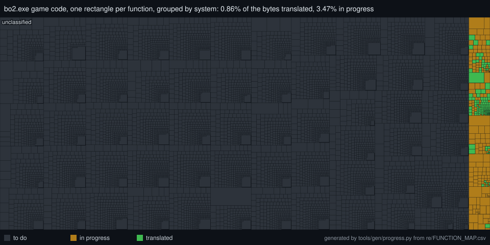

Blood Omen 2 · native Nintendo Switch port
Español
9.2%
overall progress

Components
Functions translated · weight 60%
373 / 17,118 · 2.18%
Chapters completable · weight 30%
0 / 11 · 0.00%
Platform features · weight 10%
9 / 12 + 1 partial · 79.17%
35,720 functions in the map: 373 translated, 242 in progress, 16,503 to do and 18,602 external (not game code).
A function counts only when the port reproduces its whole contract and a test pins it; each one adds about 0.0035 points, a chapter 2.7 and a platform feature 0.8.
Functions by system
translatedin progress
Scripts
322 · 85
Animation
23 · 60
Player
7 · 41
Levels
8 · 25
Camera
5 · 7
Rendering
0 · 9
Languages
5 · 3
Collision
0 · 5
Engine
3 · 0
Entities
0 · 3
Text
0 · 3
Ui
0 · 1
Campaign chapters
Slumsnot yet
Smugglers Dennot yet
Lower Citynot yet
Upper Citynot yet
Sarafan Keepnot yet
Industrial Quarternot yet
Canyonsnot yet
Eternal Prisonnot yet
Devicenot yet
Wharvesnot yet
Hylden Citynot yet
Platform
Host build skeletondone
Installer container (SFXI)done
BIG/RKV parsersdone
Validated asset extractiondone
Headless host first framedone
Level geometry (cellgrup)done
Level textures (DDS binding)done
Host renderer (OpenGL)done
Switch renderer (deko3d)to do
Audiopartial
Inputdone
Video (Bink)to do
Code map

Milestones
- M0Lab and binary triagedone7 of 7 tasks
- M1Containers and assetsdone15 of 15 tasks
- M2Host skeleton and first framein progress24 of 29 tasks
- M3Playable slicein progress · current phase22 of 38 tasks
- M4Complete systemsin progress23 of 58 tasks
- M5Complete contentnot started0 of 5 tasks
- M6Switch releasenot started0 of 6 tasks